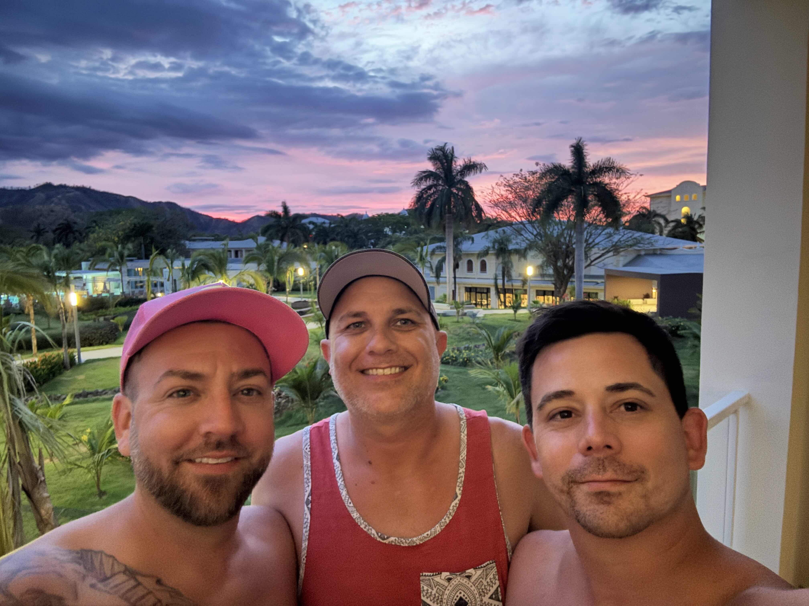

Why This Guide Exists
Costa Rica became one of those trips where the three of us got to step away from normal life and just be together somewhere tropical, beautiful, chaotic, and unforgettable. It was a celebration, an escape, and another piece of the larger 3Dudes1Life travel story.
This guide is starting as a real travel recommendation map with places we visited, stayed near, or used as part of the trip. Over time, we can add photos, resort moments, beach days, wildlife encounters, podcast references, and the stories that still make us laugh.
🇨🇷 Trip Snapshot
📅 Trip
April 2025 Costa Rica adventure.
🎂 Why We Went
A tropical celebration trip for Caleb’s 40th birthday.
🏨 Home Base
RIU Guanacaste near Playa Matapalo.
⭐ Overall Vibe
Wildlife, beach sunsets, resort chaos, pool days, and tropical recharge energy.
🇨🇷 What's Inside Version 3.0
🏖️ Beaches + Ocean Views
Explore Playa Matapalo, Playa Blanca, resort beaches, coastal walks, sunset views, swimming spots, and some of our favorite shoreline memories from Costa Rica.
🐒 Wildlife + Rainforest Adventures
Monkeys, sloths, butterflies, rainforest tours, hidden wildlife encounters, and the unforgettable baby viper we almost missed in the jungle.
🍹 Resort Life + Tropical Chaos
RIU Guanacaste, all-inclusive food and drinks, pool days, beach walks, birthday celebrations, and the stories that only seem to happen to us.
🚗 Scenic Drives + Excursions
Horseback riding, ziplining, volcano views, rainforest journeys, countryside drives, and adventures across Guanacaste with our private tour guide.
📸 Photos + Videos
Hundreds of travel memories featuring interactive photo galleries, video clips, wildlife encounters, beaches, food stops, and real moments from our trip.
📚 3Dudes1Life Travel Archive
Part of our growing collection of real-world adventures that connect our travel guides, blog stories, podcast episodes, books, and life experiences together.
🗺️ Interactive Costa Rica Travel Map
Version 3.0 of our Costa Rica Guide featuring interactive pins, ratings, travel notes, local recommendations, photo galleries, video highlights, wildlife encounters, beaches, restaurants, scenic drives, and unforgettable memories from our April 2025 adventure celebrating Caleb's 40th birthday.
Where This Connects
The Costa Rica guide connects into the podcast universe, travel memories, photo collections, future blog stories, and the larger 3Dudes1Life adventure archive.
Over time, this page can become the Costa Rica hub inside 3Dudes1Life Creative — starting simple now, then growing into a fuller guide with photos, stories, stops, memories, and recommendations.
🌎 More Adventures 🇨🇷 Costa Rica Adventure Page 🏠 Back to Creative🤝 Need a Local Costa Rica Guide?
Several of the adventures featured in this guide were made possible by an incredible local Costa Rican tour guide who helped us explore beyond the resorts and experience parts of the country we never would have found on our own.
If you're planning a trip to Guanacaste and would like information about the guide we used, feel free to contact us. We are happy to share our experience and connect you with the same local guide who helped make our Costa Rica adventure unforgettable.
📧 3dudes1lifecreative@outatinc.com
Daniel manages our travel recommendations and can help gather the information for you.